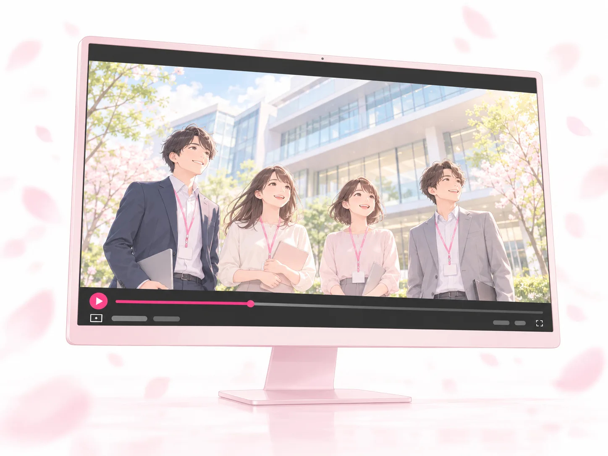
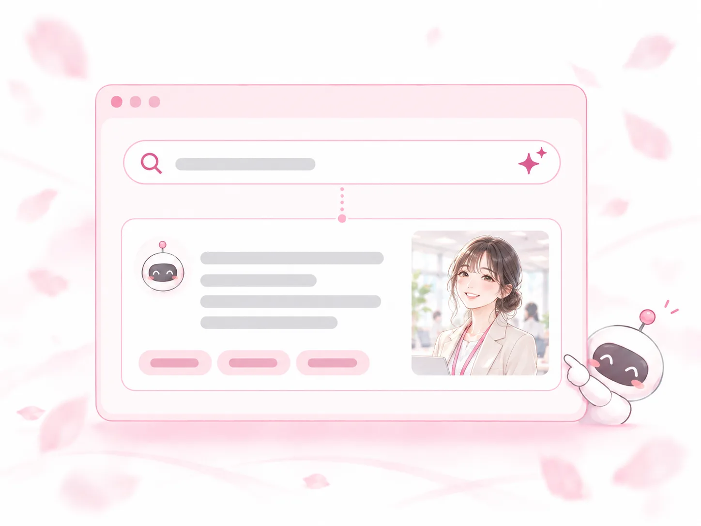

SERVICE
会社のリアルを、体験できる形に。
応募前に、未来が見える。
取材した言葉と出来事を、物語・声・動きにして候補者へ届けます。人に見せる3つのクリエイティブで「見て確かめる」機会をつくり、採用AIOで「AIに聞かれたときの説明」を整えます。

01 なぜ今
候補者は、
応募の前に確かめている。
公開されている調査から、採用動画と漫画が候補者にどう受け止められているかをまとめました。
採用動画応募の前に見られ、志望度を上げる。
-
69%
採用動画を見たいタイミングは「応募前」
エン（エン転職ユーザー1,393名・2025年4月）
-
78.1%
採用動画を見て、志望度が上がった
moovy「採用動画のトレンド調査2026」（就職・転職経験のある20〜40代333名）
-
8割以上
採用動画は「質の高い情報や安心感が得られる」
EXIDEA（第一志望の企業に入社した23卒111名・2023年7月）
-
42%
採用動画が志望度に「影響がある」「少し影響がある」
エン（エン転職ユーザー1,393名・2025年4月）
※moovy・EXIDEAは動画制作会社による調査です。「8割以上」は「非常にそう思う」31.5%＋「ややそう思う」48.6%。
漫画手に取られやすく、選ばれやすい。
-
93.8%
志望している企業が、自社の説明を漫画で行っていたら「手にしてみたい」
シンフィールド（2014年12月・150名、うち大学生44%）
-
78.8%
志望していない企業でも、漫画で配っていたら「手にしてみたい」
シンフィールド（2014年12月・150名、うち大学生44%）
-
43%
X・Instagramを主に使う層が、最も見たいSNS広告は「マンガ」（全体では動画38%・マンガ33%）
トレンド・プロ「SNS・マンガに関する意識調査」（16〜64歳1,000名・2023年春）
-
38%
マンガ広告を選んだ理由の1位は「ストーリー性があるから」
トレンド・プロ「SNS・マンガに関する意識調査」（16〜64歳1,000名・2023年春）
※シンフィールド（漫画制作会社）の2014年の調査で、参考値です。トレンド・プロの43%は「見たいSNS広告はない」を除いた割合です。
応募を決める前に「見て確かめたい」。漫画と動画は、その確かめる機会になります。
02 4つの対策
ビズ採用の、
4つの対策。
人に見せる3つのクリエイティブと、AIに正しく伝える採用AIO。
ひとつの取材から、会社のリアルを伝わる形に変えます。
人に見せる
AIに伝える
-

1採用漫画
ストーリー漫画
伝わること
先輩の気持ちと、仕事の中身
-

2採用アニメーション
漫画に声と動きをつけた動画
伝わること
入社後の1日と、自分の姿
-

3会社紹介動画
会社紹介PV
伝わること
会社の全体像と、職場の空気
-

4採用AIO別サービス
AI検索対策
伝わること
AIに聞かれたときの、会社の説明
4つで、伝わるものが違う。
求人票だけでは伝わらない「仕事の中身・人・職場の空気・入社後の姿」を、応募の前に見せます。
| 仕事の中身1日の流れ・任される仕事 | 人一緒に働く先輩・社長の想い | 職場の空気チームの雰囲気・やりとり | 入社後の姿1年後・3年後の自分 | AIでの説明AIに聞かれたときの説明 | |
|---|---|---|---|---|---|
| 採用漫画 | ◎ | ◎ | ○ | ○ | − |
| 採用アニメーション | ○ | ○ | ◎ | ◎ | − |
| 会社紹介動画 | ○ | ○ | ◎ | ○ | − |
| 採用AIO別サービス | ○ | − | − | − | ◎ |
◎特に伝わる ○伝えられる −対象外
仕事の中身・人・職場の空気・入社後の姿は3つのクリエイティブで。AIでの説明は採用AIOで整えます。
なぜ、実写ではなくアニメーションと漫画なのか。
| 実写（参考） | 採用アニメーション | 採用漫画 | |
|---|---|---|---|
| 伝わるもの | 今いる人と、今の職場 | 入社後の自分と、職場の空気 | 人の気持ちの動きと、仕事の中身 |
| 得意な場面 | 認知・集客 | 認知〜会社を知る | 理解〜応募 |
| 弱いところ | 撮れるのは今だけ。入社後の自分は撮影できない。出演者の退職・異動の影響も受ける。 | 1本あたりの制作費は、実写より高くなる場合がある。 | 読む手間がかかる。動画ほどの拡散力はない。 |
| 内容の更新 | 撮り直しが必要になる場合も | 該当する場面を差し替えて更新 | 該当するコマを描き替えて更新 |
※制作費は尺・演出・撮影条件により変わります。当社が想定する制作仕様での比較です。
今の職場を映すのは実写。入社後の自分を体験してもらうのは、アニメーションと漫画です。
4つを、どこに置くか。
| 求人票 | 採用サイト | SNS・広告 | スカウト | 説明会 | 面接前の ご案内 |
検索・ AIの回答 |
|
|---|---|---|---|---|---|---|---|
| 採用漫画 | ● | ● | ○ | ● | ● | ○ | − |
| 採用アニメーション | ○ | ● | ● | ● | ○ | ○ | − |
| 会社紹介動画 | ○ | ● | ○ | ○ | ● | ● | − |
| 採用AIO別サービス | − | ● | − | − | − | − | ● |
●主に使う ○使える −対象外
候補者が見る場所には3つを、AIが読み取る場所には採用AIOを置きます。
03 採用AIO別サービス
調べた先でも、
会社の姿が伝わる。
候補者がAIで調べたときに、会社が正しく説明されるように整えます。
採用AIOは、ビズ採用とは別のサービスとしてご提供しています。
候補者の質問から、対策する情報を決めます。
以下は質問の設計例です。募集職種・採用エリア・候補者像に合わせて調整します。
-
会社名で調べる
「〇〇株式会社では、どんな仕事をする？」
確認する情報：会社概要／職種別の仕事内容／1日の流れ
-
条件から探す
「△△市で、未経験から始められる仕事は？」
確認する情報：勤務地／応募条件／育成の内容
-
働く姿を確かめる
「入社後は、誰に教わり、どう成長できる？」
確認する情報：先輩の実例／教育体制／キャリアの道すじ
同じ質問でも、答え方が変わる
情報が整っていないと
回答に出てこない／口コミだけで説明される
情報を整えておくと
会社が出した情報で説明される／仕事の中身まで伝わる
※回答の内容は外部サービスが決めるため、表示や引用を保証するものではありません。
採用AIOで行う、5つのこと。
公開情報の確認から、採用コラムの制作・整備・測定・改善までを一続きで進めます。
| やること | 内容 | 主な納品物 |
|---|---|---|
| 01診断する | 候補者の質問で、現在のAIの回答を確認 | 質問一覧・初回診断 |
| 02情報をそろえる | 会社・職種・制度の事実と根拠を整理 | 情報台帳・改善の優先順位 |
| 03採用コラムを書く | 取材と情報台帳をもとに、仕事の中身を文章で公開 | 採用コラム（月4〜8本） |
| 04読み取れる形にする | サイトの技術面・ページ構成と、外部掲載情報との整合を確認 | 改善指示・公開と更新の管理表 |
| 05測って改善する | 同じ質問群で、回答・参照先を記録 | 月次レポート・翌月の施策 |
※Googleは、AI機能のために特別な最適化は不要で、SEOの基本がそのまま当てはまるとしています（Google 検索セントラル「AI 機能とウェブサイト」）。基本を確実に整えます。
対象のサイト・職種・質問は、ご契約時に決めます。採用コラムの本数はプランに応じて月4〜8本です。
毎月、「次に直す場所」をお伝えします。
-
初月
現状診断・優先順位
- 対象の質問・職種・URLを決める
- AI回答とサイトの状態を記録
- 改善計画と担当範囲を合意
-
2〜3か月目
優先ページを整備
- 採用コラム・FAQ・職種の説明を公開
- 技術上の問題を修正・確認
- 公開後の回答を記録
-
以降、毎月
測定・更新・改善
- 採用コラムを毎月追加
- 同じ質問群で変化を比較
- 次の改善箇所を決める
月次レポートの構成
- 01今月実施したこと
- 更新したページ・追加した説明、対応した技術項目
- 02回答の変化
- 前月と同じ質問で、言及・引用・説明の差を比較
- 03残っている課題
- 説明の不足・古い情報、参照先の偏りを整理
- 04来月のアクション
- 直すページと内容、担当者・実施順を明記
期間は作業計画の例です。AIへの掲載時期や成果が出る時期を示すものではありません。
※検索・AIの回答は外部サービスが決めるため、掲載・引用・順位・推薦を保証するサービスではありません。
04 体制と違い
必要な支援を、
必要な範囲で。
クリエイティブ制作を土台に、契約範囲に応じて専門チームが参加します。
採用課題に合う支援だけを組み合わせられます。
-
専門チーム①
求人広告運用
課題：クリック・応募が少ない
原稿にクリエイティブを添え、応募までの導線を整える
追う指標クリック率・応募率・応募単価
-
専門チーム②
スカウト（別途）
課題：返信がない
文面にクリエイティブを添え、どんな会社かを伝える
追う指標スカウト返信率・面談設定率
-
専門チーム③
クリエイティブ制作
土台
採用漫画・アニメーション・会社紹介動画をつくる
追う指標応募数・面接到達率・応募単価・内容の理解度
-
専門チーム④
採用AIO
課題：AIの説明が足りない
情報・サイトを整え、回答と参照先を確認する
追う指標AI回答の正確さ・自社URLの引用
クリエイティブ制作が土台です。求人広告の運用はプランに応じて、スカウトは別途お見積り、AI検索対策は採用AIOで支援します。
制作会社・求人広告代理店との違い。
| 制作会社 | 求人広告代理店 | 採用コンサル | ビズ採用 | |
|---|---|---|---|---|
| 応募前に、入社後の姿を見せる | △ | × | × | ◎ |
| 採用の設計 | × | × | ○ | ○ |
| クリエイティブの制作 | ○ | △ | △ | ◎ |
| 求人広告・スカウトの運用 | × | ○ | △ | ○ |
| AI検索対策（採用AIO） | × | △ | △ | ○ |
| 掲載したあとの数字まで見る | × | △ | ○ | ○ |
※◎強み／○対応／△一部対応／×対象外。提供範囲の目安で、事業者・契約により異なります。スカウトは別途お見積り、AI検索対策は採用AIOで対応します。
伝わる形にして、届けて、数値を見るところまでを1つのチームで担います。
こうした課題があるときに、効果が出やすい。
面接前の辞退や早期離職は、想像していた姿と入社後の差から起きやすくなります。応募の前に体験してもらうことで、その差を小さくします。
- 面接前の辞退が増えている
- スカウトの返信がない
- 若手の早期離職が増えている
- 検索しても会社の情報が出ない
- 条件だけで判断され、長く続かない
- 仕事の中身を言葉にしきれない
- 条件以外の理由で選ばれたい
- 求人票に書ききれない情報を発信したい
- カルチャーの合う人を採用したい
- 継続して使えるクリエイティブを持ちたい
単発の募集なら
スポット制作パック（49.8万円〜）から、はじめられます
当てはまる項目が多いほど、応募前の職場体験を活かしやすくなります。
CONTACT
まずは、
無料の採用力診断から。
御社の仕事の中身や職場の空気が、候補者からどう見えているかをお伝えします。
受付時間 平日10:00〜19:00